第二篇 · 第 6 章
类加载器、命名空间与模块
为什么相同名称的类可能是不同类型，模块访问规则又在哪里介入？先把发现、定义、身份和访问分开，再看它们怎样协作。
本章采用 Java 平台标准版（Java Platform, Standard Edition，Java SE）25 规范与 Java 开发工具包（Java Development Kit，JDK）25.0.5.0.2 的实际观察。Java 虚拟机（Java Virtual Machine，JVM）不会只凭源码中的一个类名判断对象可否互换。各组类文件隔离编译，失败案例已取得明确授权；没有加入测试框架或断言。
异常消息里，两边明明是同一个名字
CH06-E01 让两个加载器读取同一份 Plugin.class。二进制名字相同，方法和字段字节也没有改动，转换却出现：
same.binaryName=true
same.type=false
cross.cast=ClassCastException: Cannot cast org.example.jvminternals.ch06.isolated.Plugin to org.example.jvminternals.ch06.isolated.Plugin这不是异常消息把名字写错了，而是名字本来就不足以表达完整的运行时类型身份。左、右两个定义加载器产生了不同 Class；它们都能作为共享的 Object 使用，却不是彼此的 Plugin 类型。先追踪加载请求的起点和定义的归属。
6.1 内建类加载器
6.1.1 启动、平台与应用各有职责
| 观察对象 | 定义加载器的表示 | 说明 |
|---|---|---|
| Object | bootstrap(null) | 反射接口用 null 表示启动定义者 |
| java.sql.Driver | platform | 本次模块名为 java.sql，不是应用类路径中的类 |
| LoaderJourney | app | 本章主程序从应用类路径取得 |
平台加载器可以作为自定义加载器的父加载器，让子加载器使用标准平台类型；应用加载器通常承载应用模块和类路径内容。不能把“标准类库”全部粗略等同于“都由一个应用加载器定义”，也不能沿用旧版扩展目录模型解释模块化运行时。[S01]
null 是此处约定的表示，不意味着运行时没有执行加载。锁定源码还存在 Java 层的 BootClassLoader 等辅助实现，和本地启动加载逻辑协作；这与 Object.class.getClassLoader() 返回 null 并不矛盾。
6.1.2 类、资源与模块的发现路径不相同
类查找要最终建立满足格式、身份和运行时约束的类型；资源查找返回一份内容的位置或流；模块发现与解析则组织模块描述和可读关系。三者可以协作，但不能互相代替。
本次 Object 的类资源位置为 jrt:/java.base/java/lang/Object.class，本章 notes.txt 的资源位置来自项目编译目录。找到一个资源地址，不表示其中内容已经被定义为某个 Class；ClassLoader.getResource 的搜索和命名也不能直接当成 defineClass 的身份规则。
模块化内建加载器还要根据模块归属处理请求，实际委派关系并不由一个手画的“永远严格父优先树”概括。下面的流程只针对本章继承的默认 ClassLoader 方法，其他实现按自己的规则核对。
6.2 委派与自定义加载
6.2.1 查询、委派、查找与定义

ClassLoader::loadClass 先在加载锁内查询 findLoadedClass，未找到则尝试父加载器或启动加载器，仍未取得结果才调用 findClass。resolve 参数决定是否发出相应链接请求；返回一个类不等于已经把所有符号引用解析完毕，更不等于执行了类初始化。
getClassLoadingLock 对并行能力已注册的加载器可以按类名给出不同锁；否则可能锁住整个加载器。基类已注册并不让所有子类自动获得同一能力，子类需按契约注册，且加载依赖与自定义锁策略仍需分析。并行能力也不是“所有加载都不可能死锁”的证明。
6.2.2 改变发现策略，不等于可以改写类型规则
本章 SingleNameLoader 不覆盖 loadClass，只在 findClass 中识别一个精确名字并读取本章类文件：
// CH06-E01，findClass 的关键部分
if (!PLUGIN.equals(name)) {
throw new ClassNotFoundException(name);
}
byte[] bytes = Files.readAllBytes(classFile);
return defineClass(name, bytes, 0, bytes.length);它以平台加载器为父，因此核心类型仍走父方，Plugin 则由各自子加载器定义。输入、输出和允许名字都明确，不通过把同名类混入应用输出目录制造偶然结果。
父优先是常用策略，不是虚拟机规定所有自定义加载器必须遵循的唯一算法。隔离框架可以采用别的策略，仍须满足格式、重复定义、类型一致性和访问等规则。直接重写 loadClass 会接管更多查询与同步责任，不能只把父调用删掉就宣称完成安全隔离。
6.3 类身份与加载约束
6.3.1 名字加定义加载器，才描述普通类身份
对普通类和接口，规范用二进制名字与定义加载器共同标识类型。定义加载器创建该类型的定义；发起加载器参与一次加载请求，可以通过委派取得别人定义的类型。Class.getClassLoader 只暴露定义归属，不能据此反推全部曾经发起请求的加载器。[S02 §5.3]

本例再让 relay 以 left 为父，请求同一名字。输出 request.loader=relay、request.result.definer=left、relay.same.as.left=true。请求入口换了，定义仍是同一个，所以没有产生第三个 Plugin。反过来，两个加载器即使取相同名字，也不自动成为同一个定义者。
6.3.2 相同描述符还需要在各自空间里解析类型
Plugin 的方法是 Plugin echo(Plugin value)，一份字节只有一套描述符文本。左、右反射得到的参数类型却分别由 left 和 right 定义。描述符中的类名在各自命名空间关联运行时类型，不能把“字符串相同”直接当作“已经链接到同一个 Class”。
本轮的两种 Plugin 互不继承，跨类型转换失败。它们仍有共同的 Object；后面的服务提供者还通过共享接口交互。不同加载器之间并非一律无法交换对象，关键在于交互所要求的类型是否共享同一运行时身份。
加载约束进一步保护共享成员关系：参与某些覆盖、链接与签名关联的引用类型，需要在相关加载器中保持规定的一致性。它并不禁止所有同名定义。锁定 SystemDictionary::check_signature_loaders 遍历描述符中的引用类型，交由加载约束表建立或检查关系；约束表会核对已有类身份。这里的泛型 Signature 不是替代运行时描述符的检查依据。
本例观察的是合法隔离和转换失败，没有制造加载约束冲突。共享签名若发生冲突怎样形成链接错误，由规范与这些实现分支解释，不把 ClassCastException 冒称为已观察到某个 LinkageError。
6.4 线程上下文加载器与服务发现
6.4.1 选择能看见提供者的请求入口
框架持有服务接口，不代表它自己的定义加载器能看见所有应用实现。线程上下文类加载器（Thread Context Class Loader，TCCL）让调用方在明确范围内提供查找入口；它不是把应用类搬进启动加载器，也不是自动跳过父优先。
CH06-E02 把 Greeter 放在主输出，把 FriendlyGreeter 和 META-INF/services 文件放在隔离提供者目录。子加载器以系统加载器为父，因此 Greeter 的身份由 app 共享，提供者本身由 greeting-provider 定义。实际输出为：
provider=org.example.jvminternals.ch06.provider.FriendlyGreeter loader=greeting-provider service.loader=app message=来自隔离提供者的问候
context.restored=true锁定源码的 ServiceLoader.load(service) 读取当前线程上下文加载器，再建立服务加载器并按需查找提供者。具备显式加载器或模块层参数的重载有自己的查找范围，不能概括为所有 ServiceLoader 都只看 TCCL。命名模块使用服务还需按模块契约声明 uses，提供者也有相应声明规则；本章这组是未命名模块的目录部署形式。[S03]
6.4.2 恢复线程引用与关闭资源各有责任
// CH06-E02，真实控制结构的摘录
ClassLoader previous = current.getContextClassLoader();
current.setContextClassLoader(providerLoader);
try {
for (Greeter greeter : ServiceLoader.load(Greeter.class)) {
// 读取本章提供者的结果
}
} finally {
current.setContextClassLoader(previous);
}线程可能比一次调用更长寿。如果线程上下文一直指向短期加载器，它就可能形成长期持有链；服务加载器自身也可能缓存提供者实例。源码中可见这些缓存与 reload 清理逻辑，不能把一个临时变量的名称当作对象已经无人引用的证明。
本例用 finally 恢复原上下文，并由资源作用域关闭提供者加载器的文件资源。close 不是卸载类的指令，也不消除其他线程、缓存、对象或 Class 镜像的引用。本轮没有制造线程池泄漏；第 8 章用明确持有与释放关系继续观察卸载资格。
6.5 模块可访问性
6.5.1 可读、导出、开放不应混成一个开关
普通 Java 跨模块访问要考虑模块可读性、包导出以及语言成员访问规则。开放包用于允许特定深反射操作，不等于源码编译时任意访问私有成员。加载器身份和模块身份相关但不同：一个加载器可以承载多个模块，未命名模块也按加载器归属区分；模块名不替代普通类的定义加载器身份。

反射还有具体契约差异：普通反射的语言访问检查假定可读性；启用访问还按成员、导出与开放等条件判断。本例已经有 requires 关系，所以不能从它推导“反射必须另有相同读取边才行”。[S05]
6.5.2 找得到以后仍可能无权使用
CH06-E03 的 lesson.client 明确 requires lesson.library。库只导出 moduleapi 包；internal.Secret 是 public 类，但包初始既不导出也不开放。Class.forName 成功返回这个类，随后公开方法调用因访问检查失败。它与 ClassNotFoundException 所描述的查找失败处于不同坐标。
| 配置 | isExported / isOpen | 公开方法反射调用 | 私有方法 trySetAccessible |
|---|---|---|---|
| 基线 | false / false | IllegalAccessException | false |
| 额外导出到 client | true / false | 成功 | false |
| 额外开放到 client | true / true | 成功 | true，随后深反射成功 |
第三行的 isExported 也为 true，并不说明原始 module-info.java 被改成了 exports。Module.isExported 的运行期契约明确把向目标开放的包视为运行期导出；声明内容与查询视图要分别解释。一次 add-exports 仍没有为本例私有方法提供开放条件。
CH06-E04 另从同一模块产物创建一个子 ModuleLayer。未命名调用方输出 caller.named=false，library.in.boot=false、library.in.child=true，加载到的公开类型属于 lesson.library，并由该子层映射的加载器承载。创建模块层要先解析模块配置，再将模块映射到加载器；层、名字、图与加载器不是同一个对象。[S04]
模块访问对照通过显式启动参数分别改变本章进程的导出／开放条件，没有修改系统模块、原始描述符或外部账户权限。完整参数在运行说明中给出，不把一组进程的结果套到另一组条件上。
编译与证据怎样隔离
本章主构建编译四份源文件。Plugin、服务提供者和两个命名模块在 variants 下分别编译到 target/plugin、target/service-provider、target/modules，避免同名类误混进默认类路径。模块公开接口、内部类与调用者的源码均随章保留，服务配置文件也可直接定位。
类型身份、服务、子层各一进程，模块访问三组独立进程均正常退出 0；转换和访问异常由已授权的教学边界记录，没有断言或性能负载。原始命令、环境和摘要见 运行说明与本轮记录。程序观察标签不是运行时身份的新判据，日志也不替代规范条件。
回顾与思考
发现决定从哪里取得内容，定义决定类型归属，委派可以复用既有定义，模块又约束找到之后怎样访问。沿请求者、定义者、类型与模块四个问题逐步定位，才能解释看似“同名却不能转换”或“找到仍不可访问”的现象。
- 为什么 relay 得到 Plugin，不会自动成为第三个定义加载器？
- 为什么同一描述符的 Plugin 参数仍可能是两个不同运行时类型？
- 如果服务接口也被子加载器各定义一份，会失去什么共享条件？
- 为什么关闭加载器资源和恢复线程上下文都不能单独保证立即卸载？
- 为什么开放配置下 isExported=true 不等于源码描述符被改写？
第 7 章继续追踪连接、解析与初始化的时机，第 8 章解释这些类型及加载器如何被运行时持有和回收。
来源与材料
- S01：JDK 25 ClassLoader 文档与锁定 ClassLoader.java、jdk/internal/loader/ClassLoaders.java。
- S02：虚拟机规范 §5.3—5.4，身份、加载约束、模块与访问；锁定 SystemDictionary 与 LoaderConstraintTable 相关分支。
- S03：ServiceLoader 契约及 load(service)、查找与缓存实现。
- S04：ModuleLayer 文档与本章子层实际记录。
- S05：Module 契约、AccessibleObject 契约及对应实现。精确版本和符号见来源索引。